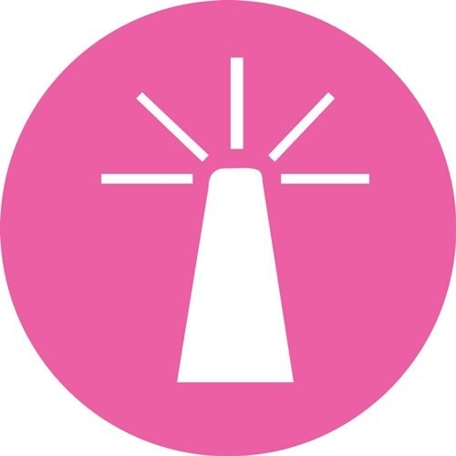
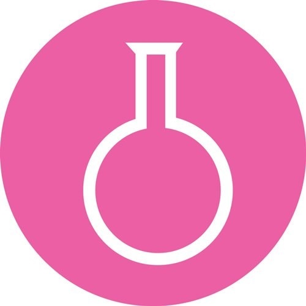

基本资料
- 出生年月：1996 年 11 月
- 专业：信息管理与信息系统
- 学位：本科
- 英语： 4 级
联系方式
- 手机：17853502159
- 邮箱：1140915576@qq.com
- QQ：1140915576
演出经历
首部作品
2014年
匆匆那年
依然在校的白敬亭出演搜狐视频周播剧《匆匆那年》，在剧中饰演男二号乔燃
明星推理综艺秀
2016年4月
明星大侦探
参加明星推理综艺秀《明星大侦探》；4月22日，其主演的青春电影《谁的青春不迷茫》上映，并在片中饰演叛逆少年高翔

获奖经历
最受欢迎角色
2016-12-15
第十三届
广州大学生电影节最受大学生欢迎角色——高翔（饰演者）
青年演员
2017-11-23
2017届
网易有态度人物盛典，年度最有态度青年演员（获奖）

获奖经历
- 2010 年 优秀学生会干部
- 2011 年 国家科技进步奖
- 2010 年 优秀学生会干部
- 2011 年 国家科技进步奖
- 2010 年 优秀学生会干部
- 2011 年 国家科技进步奖
- 2010 年 优秀学生会干部
- 2011 年 国家科技进步奖